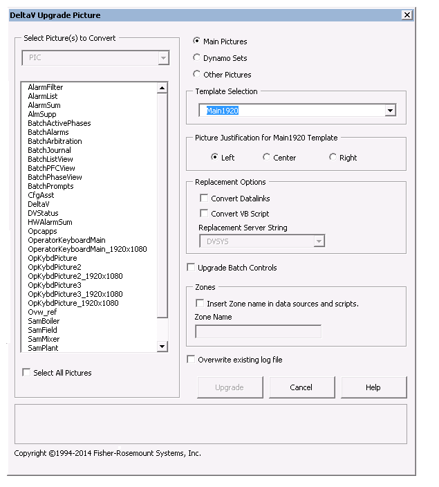
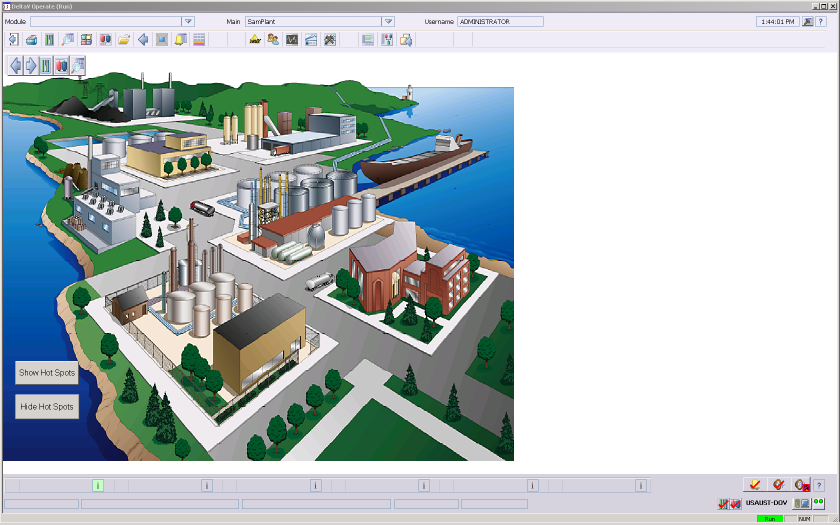

Working with pictures - widescreen and high definition 1080p monitors
DeltaV supports widescreen monitors, compliant with the Wide Super eXtended Graphics Array (WSXGA) standard, running at a display resolution of 1680×1050 with a 16:10 aspect ratio and high definition 1080p monitors with a 16:9 aspect ratio.
Set the color depth for all monitors to the default of 32 bit. If you change the screen resolution, it may be necessary to reset the color depth setting to 32 bit.
Widescreen Monitors and DeltaV Operate
Several options allow greater flexibility when using DeltaV Operate with widescreen and high definition 1080p monitors. You can either use a new panel layout option, allowing you to use your existing main pictures created for a monitor with a 4:3 aspect ratio or you can use main pictures created from templates for widescreen and high definition monitors.
To run DeltaV Operate in a Remote Desktop Services client session that uses a widescreen monitor, you must have Remote Desktop Connection version 6.0 or higher.
Panel Layout
When you run DeltaV Operate in Run Mode, a monitor with a 16:10 aspect ratio or high definition resolution (1920x1080) is automatically detected. Faceplates, detail displays, and other controls appear the same on widescreen or high definition monitors as on a monitor with a 4:3 aspect ratio. However, a wider Toolbar, a six-button Alarm Banner, a Critical Alarm Summary panel, a Main Display History panel, and a Module History panel also appear in DeltaV Operate. This option uses a Layout file to set these initial displays and their placement. The default Layout file for widescreen monitors is DefaultHorizontal_1680x1050.Layout, and the default layout file for high definition 1080p monitors is DefaultHorizontal_1920x1080.Layout . For more information on Layout files, refer to The Layout Templates.
When DeltaV Operate uses the DefaultHorizontal_1680x1050.Layout layout file or the DefaultHorizontal_1920x1080.Layout layout file, certain settings in UserSettings.grf may not be used. For example: a setting in the DefaultHorizontal_1680×1050 .Layout file or DefaultHorizontal_1920x1080.Layout file takes precedence over an equivalent setting in the UserSettings.grf file; however, a setting in the UserSettings.grf file that has no equivalent in the DefaultHorizontal_1680×1050.Layout file or DefaultHorizontal_1920x1080.Layout file will still be used.
The following figure shows the default layout on a widescreen monitor using the DefaultHorizontal_1680x1050.Layout layout file.
Bypass Panel Layout
You can also create a main picture that uses the entire screen. In
this case, the Critical Alarm Summary panel, Main Display History panel, and
Module History panel from the default Layout file do not appear. To not use the
default Layout file, select the Bypass 16:10 Panel Layout or Bypass 16:9 Panel
Layout check boxes in the User Settings dialog. To open the User Settings
dialog, click the User Settings button
 on the DeltaV Workspace
Toolbar. For more information, refer to
The User Settings Dialog.
on the DeltaV Workspace
Toolbar. For more information, refer to
The User Settings Dialog.

If you customize the DeltaV Operate environment by using one of the Layout files for high definition 1080p monitors, do not select the Bypass 16:10 Panel Layout or Bypass 16:9 Panel Layout check boxes. For more information, refer to The User Settings Dialog.
The Bypass 16:9 Panel Layout option does not appear on the User Settings dialog unless you are running DeltaV Operate on a high definition 1080p monitor.
Multiple Widescreen and High Definition 1080p Monitor Workstations
A multiple monitor workstation can have two or four widescreen or high definition 1080p monitors, set up in a horizontal or square configuration. A mixture of widescreen or high definition 1080p monitors and monitors with a 4:3 aspect ratio can coexist in the same DeltaV system. However, all monitors in a multiple monitor configuration for a single workstation must have the same aspect ratio.
Using the DeltaV Upgrade Picture Expert with Widescreen and High Definition 1080p Monitors
You can take advantage of the larger picture area of a widescreen or
high definition 1080p monitor by using the DeltaV Upgrade Picture Expert to
convert an existing main picture that was originally designed for a monitor
with a 4:3 aspect ratio. To open the DeltaV Upgrade Picture Expert, start
DeltaV Operate in Configure Mode, and then click
 . (If the DeltaV Upgrade
Picture Expert button is not visible in DeltaV Operate, click
,
and then select the DeltaVUpgradePictureExpert check box in the list of
WorkSpace Toolbars before closing the Toolbars dialog.) After selecting the
main picture you want to convert, click the Main Pictures radio button, select
Main1680 or Main1920 from the Template Selection drop-down list, and then click
Upgrade.
. (If the DeltaV Upgrade
Picture Expert button is not visible in DeltaV Operate, click
,
and then select the DeltaVUpgradePictureExpert check box in the list of
WorkSpace Toolbars before closing the Toolbars dialog.) After selecting the
main picture you want to convert, click the Main Pictures radio button, select
Main1680 or Main1920 from the Template Selection drop-down list, and then click
Upgrade.
Most tasks performed by the DeltaV Upgrade Picture Expert overwrite the existing picture file when you convert it. Therefore, it is recommended that before using this utility, you back up any picture file that you plan to convert.

For more information about converting main pictures, refer to the online Help for the DeltaV Upgrade Picture Expert.
For example, if you select the Bypass 16:10 Panel Layout option in the User Settings dialog and specify left justification when using the DeltaV Upgrade Picture Expert to convert the sample main picture, SamPlant, the layout for the new SamPlant main picture appears in DeltaV Operate in Run Mode as shown in the following illustration:

You can then use the additional space in the main picture to position more process control objects.